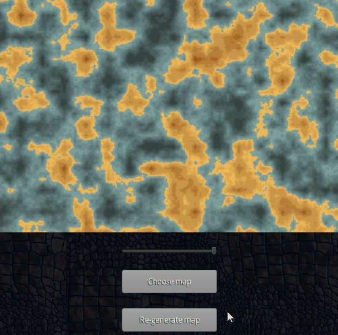
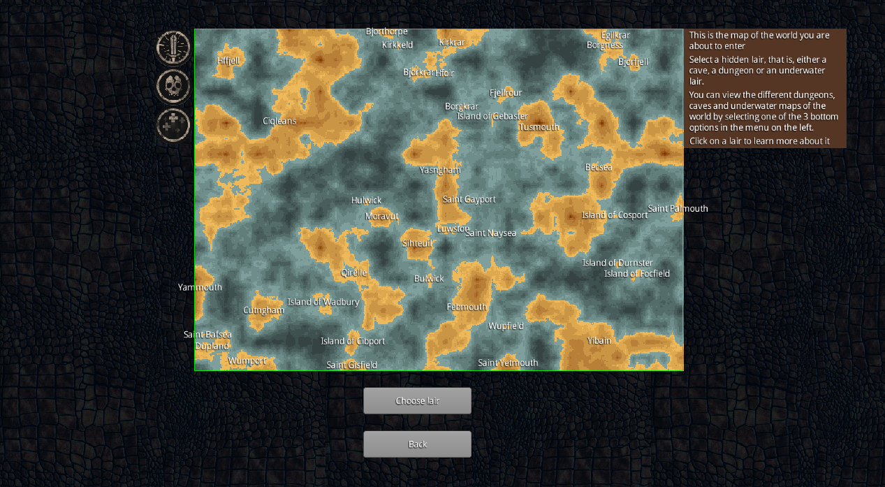
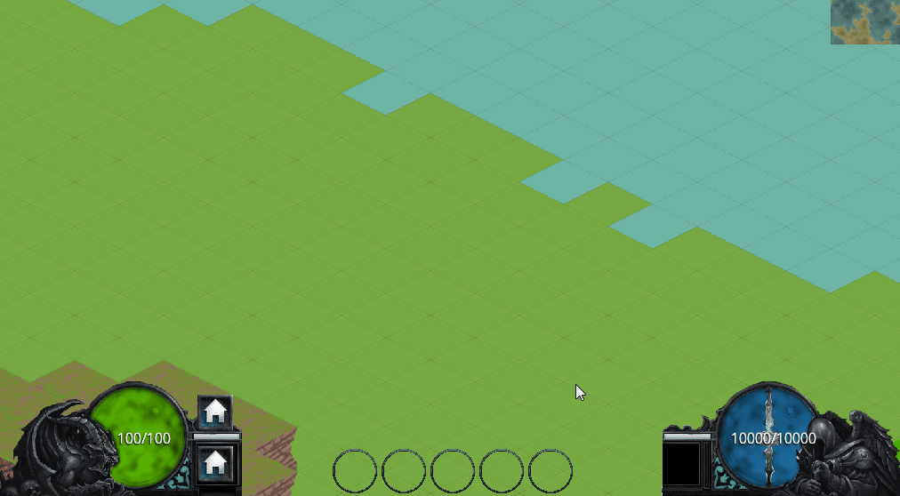

A 2D single player simulation serious game developed for Proide (ONG) whose aim is to fight against the spread of the HIV virus and raise AIDS awareness among the youth
A 2.5D hardcore platformer where a bipolar bit-based character has to get through WiFi waves, high-speed internet, faulty server wires and fight against evil viruses.
An experimental game prototype that tests a verb-noun based spell casting game mechanic in a procedurally generated three layered world
Platform: PC
Duration: 6 months
Team size: 1
Tools used: IntelliJ, LibgGDX (Java game development framework)
Role: Game Designer, Game Programmer
Overview
Single player, 2D isometric experimental game prototype, that tests a verb-noun-element based spell casting mechanic (Ars Magica, Magicka inspired) in a procedurally generated three layered world.
Core game mechanics
Procedurally generated three-layered world
The prototype generates a procedurally generated world with 3 layers: surface layer, underground layer full of caves and passages and an underwater layer with the same kind of feature.
It also divides the world in cities and islands and procedurally names them, using different types of names for northern, eastern, western and southern regions.


Spell-casting mechanic
The initial idea for the spell-casting mechanic was partially inspired by Ars Magica's (Creo-Intellego-Muto-Perdo-Rego) mechanic and fictional magic grimoires (such as Lovecraft's Necronomicon) spell casting syntax, trying to adapt to the more restricted virtual interaction world without giving away much of the flexibility that physical world spell casting phrasing has.
The spell-casting mechanic tries to embrace all possible spell outcomes: creating creatures from scratch, reanimating objects or corpses, casting fire/storm attacks, etc.
In order to achieve this, the experimental prototype makes use of a series of elements that can be used both as verbs and nouns. These elements were very carefully chosen in order to be intuitive and able to embrace as much outcomes as possible. Elements are also intented to be used as complementary attributes to be specified in the spell.
For example: "Creo" + "Corpus" + "Astutia" will create a certain type of creature that has intelligence, while "Creo" + "Corpus" will create a creature with a very basic IQ.

AI mechanic
The AI of the different creatures that can be created is used as a game mechanic as well, because each of them has a pre-programmed behaviour that reacts to the player's input (that acts as some kind of omnipotent god).
Ragnarök
A commissioned Viking-themed battle card game with more than 250 cards
Platform: PC
Duration: 4 months
Team size: 1
Tools used: Excel, NanDeck (http://www.nand.it/nandeck/), Paper prototyping
Role: Game Designer
Overview
Ragnarök (provisional name) is a commissioned 2-player card battle game with customizable decks where the players take the role of a viking king and have to defeat the enemy. There is a future intention to expand the game and design a tournament version of the game made of two phases.
Core game mechanics
Due to a non-disclosure agreement I cannot display information about the game. I can say, though, that the game main core mechanic involves combining (connecting) cards through slots. The game becomes complex through a very simple mechanic.
Card Design & Balancing
More than 250 cards, of different types, were designed, emerging from the core game mechanics of the game.
The game was modelled in a (pretty huge!) Excel spreadsheet, and using a system of costs vs. benefits for each of the cards, the balancing was performed. This part of the process took quite a few iterations (involving paper prototyping and playtesting as well).
Paper prototyping and playtesting
This Dungeon Is Alive
Entry for the 48-hour "Ludum Dare #35" Game Jam. Theme: "Shapeshifting"
"This Dungeon is Alive" is a single player, first-person 3D game, developed for the 48-hour "Ludum Dare #35" game jam, under the theme "Shapeshifting"
Synopsis
Welcome to this Creepy Dungeon!
You are an occultist in a quest to get the coveted Necronomicon from the heart of a labyrinthine dungeon... a dungeon that is alive. The corridors breathe, the rooms move... the dungeon shapeshifts while you explore its most deep secrets.
Find the Necronomicon in this constantly shapeshifting dungeon and find the exit before something catches you, taking you to your certain death.
Outcome of the Competition
The entries for this event are evaluated in 8 different categories, each one of them having its own ranking. These are the results for the entry:
Role: Game Designer, Game Developer, Game Artist, Sound Designer
Overview
Award winning single player, 2D visual novel (dating simulator style), conceived to increase awareness about teen dating violence, and help teens, tweens and young adults to identify and avoid abusive relationships.
The main purpose of this game is to get under the skin of as many players as possible, allowing boy-girl, girl-girl and boy-boy relationships, where the player can assume any gender. In order to achieve this, the game portrays subtle unhealthy treats in relationships that players can relate to, without getting to obvious (usually physically) violent behaviours.
Consequently, players will be able to swift their perception about concepts such as "love" or
"romanticism" towards healthier mindsets, hopefully helping them to avoid introducing unhealthy attitudes in their future romantic relationships.
Initial trailer
Note that this trailer portrays an early version of the game. An updated trailer will be available soon.
Dialogue Engine
The game required implementation of a dialogue engine that reacted to the player's choices, showing the appropiate branches of the story.
In order to do so, a dialogue engine had to be developed. The engine parses the story containing the story tree and updates the view accordingly.
The story tree file (JSON) is divided into a series of "Story Nodes", which in turn can contain a list of "Dialogue Nodes". Every "node" contains either a field that specifies the next node to be played or a list of options that trigger different "nodes".
Each node specifies the place we are at, the characters that should appear, and their moods, the texts, the options, and the effects that may be triggered (such as "fade" or "wiggle").
The engine also parses the texts, which have to be written following a specific syntax.
With this special syntax, we are able to specify the character that is speaking, his/her mood, and we use some special characters to specify new lines, and words that depend on the player's / crush's gender.
Screenshots
Story design. Tree.
UI design
Art
Lhive
A 2D single player simulation game developed for Proide (ONG) whose aim is to fight against the spread of the HIV virus and raise AIDS awareness among the youth
Role: Producer, Game Designer, Game Developer, Artist
Overview
Single player 2D simulation - strategy game, conceived to raise awareness among youth about HIV and AIDS.
LHIVE (VIHDA, in spanish) is a simulation 2D strategy game developed for the ONG Proide conceived to educate young people on AIDS and HIV. In LHIVE the player starts with a 5 billion budget and has to use it strategically to avoid that the HIV spreads while he subsidizes investigation to find a vaccine. Each country starts from the actual situation of the virus at that certain country and evolves based on real statistics. This initial situation is specified by an external XML file that the game loads at the beginning.
The actions that the player does on each country have consecuences on the velocity of the spread of the virus and AIDS.
The player has to save the humanity before the virus exterminates the whole population.
Core game mechanics
Resources management
The player takes the role of some kind of omnipresent ruler of the Earth that is provided with some budget in order to exterminate the virus and find the cure. The resources are equivalent to action points, and spent in different decisions that affect the evolution of the virus.
Decision making
One of the biggest aims of the game is to raise awareness of the virus and the disease, and as such decision making is a core game mechanic whose use intends to educate.
MiwMiw
A new tangible interaction model using gesture based interaction and Internet of Things to improve the dialogue between humans and everyday objects
Duration: < 1 year
Team size: 5
Tools used: Teensy 3.0, Teensyduino, Hardware building
This research focuses on the design, validation and development of a new interaction model, from now on known as MiwMiw, whose main goal is to improve the dialogue with everyday objects, enduing them with new functionalities in a close, tangible and natural way.
Bittrip
A 3D hardcore platformer (2.5D perspective) where a bipolar bit-based character has to get through WiFi waves, high-speed internet, faulty server wires and fight against evil viruses to deliver 1 bit of information
Bittrip is a single player, third-person platform adventure in 2.5D (3D with a 2D view) where a single bit called Bit (what a surprise!) has to travel through optical fiber, servers and wifi and deal with evil viruses to deliver safely 1 bit of information.
Bit can exist in two different modes - 1 and 0 - and each one of them activates or deactivates Bit's abilities and its environment. In the game we treat them like two different characters that the player switches: One and Zero.
Core game mechanics
Bit's bipolarity
Bit can exist in two different states. The player can always choose whether to exist in mode 0 or 1.
Mode 0 is the natural mode. Zero can move, jump and shoot enemies.
Mode 1 is the special mode. One can see blocks that Zero can't, and when in this mode, some environment features get activated (such as ceiling magnets, secret gates or superspeed). On the other hand, the shooting ability stays deactivated.
The levels were designed so that the player has to stay alert, think quicky, react and switch cleverly between both modes in order to overcome obstacles. In some situations certain combos are needed such as One -> Jump -> Zero -> Shoot -> One -> Jump.
Energy management
Zero is able to shoot tiny misiles using energy. The player has to carefully manage that energy in order to be able to have munition for all the enemy encounters.
In order to recover energy, levels have repeaters. On the other hand, Bit will have to avoid substractors that will remove energy from him.
Level Design
Levels were designed using the spectrum of environmental elements that emerged from the core mechanics such as breakable walls, through-walls, ceiling magnets, superspeed zones and Wi-Fi areas with floatability, among others.
Akamon
A bunch of social casino Facebook games
Platform: PC (Facebook games), Mobile, Tablet
Duration: 6 months
Team Size (Game design part): 2
Tools used: Microsoft Excel, IntelliJ
Role: Mathematical Game Designer
Overview
As part of my job during the 6 months I worked at Akamon Entertainment Millenium I was enrolled in several social slot games and videobingos with different special features and themes. For all of them, I had to model the game, properly balance it, build a simulation and playtest it.
The games are all published in the Viva! Bingo & Slots app, available in Facebook.